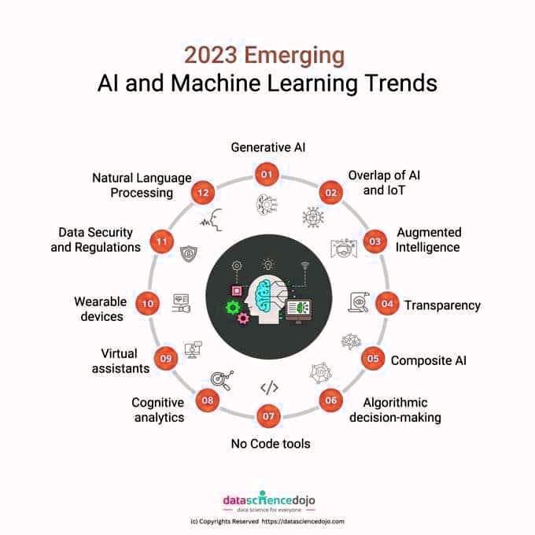

La métaphysique des machines
Voici un sujet largement exploré pas la SF, qui envahit la réalité, et qui est fondamental.
Cette chercheuse explore la mécanique quantique comme clé pour doter l’intelligence artificielle d’une conscience
Comment construire une intelligence artificielle réellement intelligente ? Selon Suzanne Gildert, fondatrice de Nirvanic Consciousness Technologies, cela passe par la mécanique quantique. Elle s’explique dans une interview.
En effet, ayant vu l’arrivée des smartphones, et internet se transformer, je suis partagé quant à son accueil, tant la technologie que nous connaissons est décevante, normative, et complique la vie au lieu de la simplifier. Et il faut bien reconnaitre qu’elle est devenue le vecteur de domination de ceux qui savent s’en emparer pour imposer leurs règles.
Dans les années 90, quand les premiers réseaux sont apparus, des réseaux privés et gratuits, voyaient le jour. A San Francisco, des geeks achetaient des apparts en vis à vis, au même étage, dans tout un quartier pour placer des antennes bien en face les unes des autres, et créer des réseaux urbains libres et gratuits. Mais cela a vite été interdit pour devenir un marché, que les grands opérateurs de télécom se sont partagés de manière si oligopolistique qu’ils ont été sanctionné en Europe. L’innovation technologique est souvent instrumentalisée, comme pour les smartphones et les mails, qui sont devenus les grandes oreilles de la NSA dans les années deux mille.
En réalité, je suis nostalgique d'une époque qui n'existera jamais. J'ai rêvé un futur qui n'existera pas. Dans mes rêves d’enfant des années quatre-vingt, la technologie devait être libératrice et pas oblitérée par les appétits de données des constructeurs. Ils espionnent, et outrepassent largement le périmètre de la maintenance de l’objet.
Ado, j’ai été parmi les premiers à posséder, un IBM PS1. J’avais eu d’autres ordi avant mais là c’était du sérieux, le premier vrai Personnal Computer, (en désactivant le shell, on arrivait à avoir 4 mega de ram !).
Dans mes rêves d’ado, on aurait pu faire autrement, à l’instar de la production du courant électrique, qui aurait pu être un champ électrique sans fil selon Tesla en controverse avec Edison, qui pour résumer, représentait des intérêts qui n’étaient pas d’accord sur le business model. Je trouve que la façon dont le business technologique s’est développé est très décevante, j’ai l’impression qu’ils m’ont volé quelque chose. Le business de la Tech. s'efforce maladroitement de rendre les innovations technologiques super-rentables, en concevant des objets technologiques, non pédagogiques, non modulables, destinés à rendre les utilisateurs captifs, c’est-à-dire en incorporant toujours plus de savoir-faire dans l’objet, et toujours moins dans l’utilisateur, qui ne devient finalement qu’une proie commerciale, et plus vraiment un client.
L’open source existe heureusement, et les modèles d’IA sont publiés par leurs créateurs, mais il existe une différence entre open source et open weight L'expression "open weights" signifie que seuls les paramètres ou les poids pré-entraînés du modèle de réseau neuronal lui-même sont rendus publics. Cela permet à d'autres d'utiliser le modèle à des fins d'inférence et de mise au point. Toutefois, le code d'entraînement, l'ensemble de données d'origine, les détails de l'architecture du modèle et la méthodologie d'entraînement ne sont pas fournis.
La confusion vient du fait que certaines personnes qualifient à tort l'IA "open weights" d'open source, alors qu'il ne s'agit pas d'un code source. Cette situation est problématique car elle conduit à des malentendus sur la nature de ces deux composants différents.
Pour simplifier :
Code source : Le code source est lisible par l'homme, débogable et modifiable. Il s'agit des instructions relatives à la création d'un logiciel ou d'un algorithme. Dans le contexte de l'IA, le terme "open source" fait référence à la disponibilité du code source pour modification et distribution.
Weights (littéralement poids en français) : Les poids sont les résultats de l'entraînement sur les données et ne sont pas lisibles par l'homme ou déboguables. Ils représentent les connaissances qu'un réseau neuronal artificiel a apprises. Dans le contexte de l'IA, l'expression "open weights" fait référence à la disponibilité de ces poids à des fins d'utilisation ou de modification.
Bref, de manière générale, je trouve que l’utilisateur est infantilisé, on le force à se situer en dessous de l’objet, en dépendance : des mises à jours, des connexions, de l’énergie de la batterie, de l’objet lui-même. L’utilisateur final, ne saurait pas le réparer, autrement qu’en remplaçant des pièces. Même, l’humain moyen, que je suis, ne sait plus exactement comment fonctionne la machine, car il est dépassé par le périmètre étendu des capacités de l’objet ou du programme.
Une technologie de rupture
Et c’est encore plus vrai avec la récente apparition des IA grand public. (qui eux pour de vrai ont bien volé le style des auteurs qu’ils plagient).
Une rupture s’est produite, courant du vingtième siècle, l’homme ne connait plus la technologie qu’il manipule. De la roue, jusqu’au différentiel de boîte de vitesse, en passant même par les moteurs à vapeur, thermiques, électriques, voilà des inventions relativement simples à concevoir en pensées, et l’esprit humain était facilement apte à s’en emparer. Et même, il me semble que j’arriverais mieux à expliquer la réaction en chaine dans une fission nucléaire, que le fonctionnement du transistor. J’aurais vraiment peine à expliquer comment fonctionne un transistor, le composant électronique apparu en 1947 et qui a révolutionné l'électronique perfectionnant les postes radio. C'est difficle à expliquer parce que c’est très ingénieux et relativement compliqué, il faut bien une petite vidéo avec des schémas et un moment pour comprendre, je vous engage à regarder. C’est très instructif. (Bientôt le Qbit à un seul photon et le transistor à un seul électron) Aujourd’hui une puce examinée au microscope comporte des couches superposées de minuscules composants dont le fonctionnement est un mystère et le restera pour la grande majorité d’entre nous.
En effet, les composants électroniques, c’est une autre histoire, cela nécessite une initiation. Et cela fait une grande différence en terme d’égalité sociale. Une fracture d’accès à la technologie, qui offre un avantage démesuré que je comparerais volontiers, à l’utilisation de la poudre pour l’invention des armes à feu.
Bien sûre, de nos jours, on peut apprendre à coder et développer des applis, mais pas sans le hardware adéquat. Et d’ailleurs l’hégémonie de NVIDIA sur certaines catégories de puces vient confirmer l’importance stratégique du domaine.
Je viens d'une époque sans mot de passe
On nous a vraiment volé quelque chose : du temps d’attention, et de l’intimité, de la sérénité. Je le vois comme ça, car en effet, je viens d’une époque sans mot de passe. Le mot de passe était réservé à des activités secrètes, voire sulfureuses. Genre « Fidelio » pour ceux qui ont la référence. Le mot de passe, était réservé aux activités discrètes, le MDP c'est là tout le problème. C'est ce qui rend l'expérience possible certes : c’est une identification unique, un index, et c'est en même temps, ce qui rend l'expérience ennuyeuse, lourde, passablement mal pensée. Il est pénible d'avoir à jongler toute l’année avec une cinquantaine de mot de passe, et de s’identifier sans cesse. Ces technos procèdent au niveau de l'identité pour nos distinguer des machines, je me demande pourquoi la techno devient régressive, dans le domaine des échanges par rapport à l’expérience réelle. (Pour acheter un service ou un bien on a rarement besoin de s’identifier dans la vraie vie).
Et pourquoi ce n’est pas au robot de prouver qu’il est humain ? La techno va chercher à vous identifier autrement, par les empreintes, par le facial, par je ne sais quel moyen pour gommer cette lourdeur dans l'expérience. Les OS sont conçus pour se mettre un mot de passe à soi-même. Et comme sois disant, rien ne marche, on en viendra rapidement à la puce implantée, et avec les avancées de Neuralink, autant dire que la prophétie de Saint Jean est presque déjà réalisée. Mais je m’égare, à l’heure actuelle, c’est un peu pessimiste. J’espère qu’il est encore temps d’agir, cette page milite pour l’interdiction de l’auto-réplication, et l’interdiction des armes dotées d’IA tueur autonome, malheureusement déjà en service sur les drones de combat, pour contrer les brouilleurs. La frappe, l’instruction finale de tuer n’est plus d’origine humaine. La machine a « licence to kill ».
Par ailleurs, je me demande toujours par quel « miracle » dans les années 2000, on a réussi à placer un smartphone dans la poche de chaque individu, même de ceux qui n'en voulaient pas. Personnellement, j'ai toujours rêvé d'avoir un terminal dans ma poche, mais pas un terminal comme ceux-ci, pas un terminal qui m'espionne et me géo localise. J'imaginais avoir mon ordinateur terminal avec toutes ses capacités de connexion dans ma poche et « pinguer » des satellites, et être le boss de la terrasse, et non pas cet objet qui, posé sur une table de café, ou même dans votre poche écoute toute la conversation, pour vous envoyer des pubs. Cela paraissait impensable, de livrer sa vie privée à un tiers inconnu, à cette époque. Ce n’était vraiment pas de ce terminal de poche, jumelé à un téléphone formaté NSA etc, dont j'avais rêvé. D'ailleurs, si on y pense, c'est plus l'objet du constructeur que le nôtre, Nous l'avons acheté certes, mais il est standardisé, il n’y a pas d’alternative, c'est un petit peu comme si nous le louions aux grandes entreprises qui le fabriquent et l'animent. Ils vendent les services via l’objet, on se souvient de la condamnation d’Apple pour Safari par exemple. Et tout bien considéré, vu les téléphones, je crois que le business de la Tech va devoir employer des trésors de marketing pour me faire acheter de tels robots. Pour ma part je suis sûre, de ne pas vouloir d’un androïde version « Bishop » planté au milieu du salon. Et pourtant au départ, j’en rêvais, comme on rêve d’une nouvelle altérité, d’un golem non d’argile mais de silicium, sans bien mesurer « le bouleversement transgressif de l’ordre naturel que cela va provoquer », et c’est bien plus que la 4ème révolution industrielle annoncée, Bill Gates l’a encore rappelé récemment, ce sera un changement de paradigme. Aujourd’hui il arrive, les trompettes retentissent déjà autour de Sam Altam pour annoncer la naissance de l’alter ego d’électron et de son intelligence qui dépassera la nôtre de quelques parsecs. J’imagine une sorte de Docteur Manhattan, orphelin de ses origines humaines.
La SF s'invite au quotidien
Cette perspective me laisse perplexe, dans une curieuse attente, mêlée de méfiance et de fascination. Mais, d’autres se précipiteront, et les robots seront dans nos maisons, d’ici peu. Selon moi, les hommes développeront vite des sentiments empathiques envers les machines, les hommes vont adorés les machines, au point de vouloir en devenir une. J’avais oublié un s dans mon texte, je l’ai vu en relisant puis, il s’est souligné en bleu, j’ai dit à Word, en pensée, tu as raison, je l’avais vu aussi. La machine est déjà dans notre intimité, car elle nous corrige, tel que nous lui avons appris le faire. Qu’apprendrons-nous à faire aux machines ?

Mais tout bien sûr, et plus que tout. C’est vers, ce plus que tout que les grands investissements financiers se ruent, et ils ne se trompent pas. C’est vrai que c’est intriguant. Qu’apprendrons-nous aux machines de plus, de ce que nous pourrions faire nous-même ?
La réponse est : Tellement de choses. Les domaines sont innombrables, et à découvrir. Les IA nous aident déjà dans l’analyse des données, la modélisation théorique et la conception d'expériences, à compiler et synthétiser les données cosmiques, ou découvrir de nouveaux alliages, de nouvelles matières en chimie. En médecine, leur apport sera révolutionnaire. Certains parlent de la découverte de la façon de stopper le vieillissement à courte échéance. Et on nous promet surtout de découvrir toute la physique, en réparant le climat au passage.
Et cette page ne s’exemptera pas d’extrapoler sur le sujet :
Des questions se posent à la frontière de la science-fiction, qui recule chaque jour que le machine learning progresse.
Bien que Kubrick nous a mis en garde dans « 2001 » avec son célèbre « Sorry Dave » ; froide et dernière réplique de HAL 9000 avant de laisser l’astronaute à son triste sort, l’humanité s’engage dans la voie des super IA à toute vitesse. Des alertes parviennent régulièrement au public via les développeurs eux-mêmes, quel est le danger qui se cache derrière la supra intelligence informatique, qui justifie des congrès internationaux sur la sécurité de cette technologie comme pour le nucléaire.
- Quid de la métaphysique des machines ?
Existe-elle ? Sera-t-elle le fruit d’une émergence ? (*le terme est pratique)
Quid des données de l’humanité que les serveurs hébergent et que les algos exploitent ?
En auteur de SF je pense que si on disposait de toutes les données de l’humanité, on pourrait demander aux IA d’élaborer, des modèles prédictifs d’évènements, comme dans West World, à la façon des oracles antiques.
Quid des interfaces neuronales ?
Est-ce que, par implant, les données des cerveaux humains implantés, fourniront le matériel aux IA pour percer le mystère de la conscience ?
Peut-être même, que les implantés deviendront le vecteur d’une contagion de conscience des humains vers les machines, si le phénomène n’émerge pas « naturellement ».*
La déferlante des thématiques submerge les auteurs de science-fiction, comme moi qui ai écrit une nouvelle en octobre 2022 où j’aborde la possibilité d’une simulation de conscience, et où je propose une modélisation systémique du fil de la pensée, (de l’instance de décision qui nous protège des dangers extérieurs à chaque instant), sans résoudre la question de la conscience, qui apparait non locale pour beaucoup d’auteurs. Pour ce qui concerne les programmes cela semble un non-sens ; sauf à programmer spécifiquement une simulation de conscience, bien entendu.
Un grand schisme, naitra-t-il au sein des communautés humaines, de la question la plus clivante ?
La question du trans-humanisme, qui divise au cœur chaque personne, se posera vite. Améliorer l’homme, ou le dénaturer ? Le débat philosophique devra avoir lieu. Pourtant, il est à redouter que les interfaces neuronales avancées soient expérimentées, dès lors que la technologie le permettra, sans parler des manipulations génétiques, et du thème de l’eugénisme que l’amateur de science-fiction que je suis, ne peut pas oublier, et dont l’actualité est plus discrète.
Et nous serons aux premières loges pour voir une nouvelle altérité prendre forme, et nous allons en suivre l’évolution.